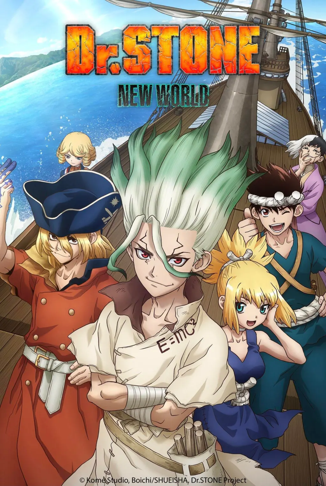

Synopsis:
Dr. Stone follows Senku Ishigami, a brilliant scientist who awakens after 3,700 years to find humanity petrified by a mysterious flash of light. Trapped in a "Stone World" where civilization has crumbled, Senku embarks on a remarkable journey to revive his friends and rebuild society from the ground up.
With his scientific genius, Senku meticulously utilizes the remnants of the old world to create the tools and technologies needed to survive and thrive. He teams up with Taiju Oki, a strong and kindhearted friend, and Yuzuriha, a skilled archer, to overcome numerous obstacles.
Their path is fraught with peril, including the harsh forces of nature, the threat of other revived individuals with differing ideologies, and the enigmatic Tsukasa Shioji, a powerful warrior who believes only the strongest should survive in this new era.
As Senku and his growing band of allies revive more people and develop groundbreaking inventions, they uncover a deeper conspiracy: the petrification event was not a natural disaster but a deliberate act with a hidden purpose.
Driven by his unwavering belief in science and the potential of humanity, Senku and his friends must unravel the mystery of the petrification, confront their enemies, and ultimately determine the fate of humanity in this newly awakened world.
Back to Favorites